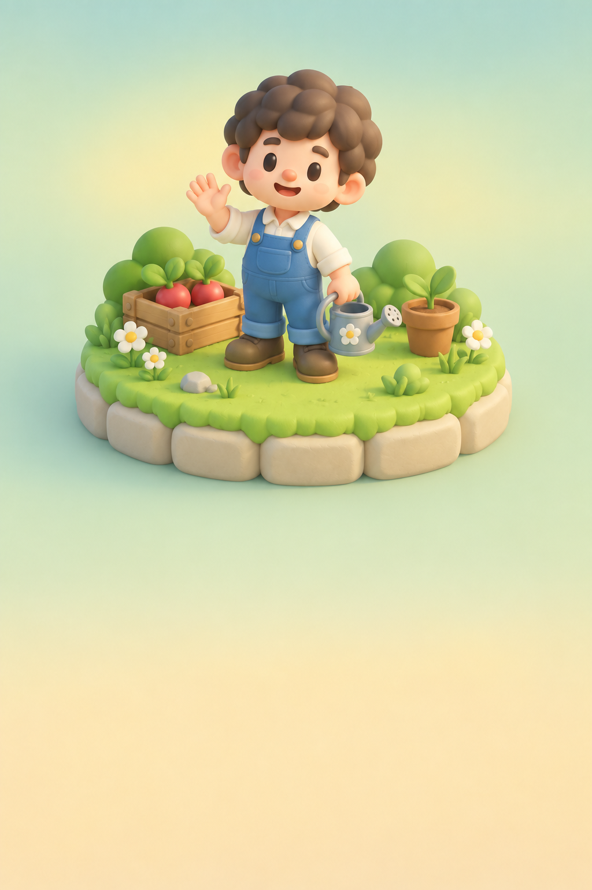

Profile
Edit look
Lin
Home Cook
Shanghai
· Subtropical
Since Oct 2
ID 4821 7730
“Radishes before coffee.”
Edit
12
Following
18
Followers
9
Mutual
3
/4
Close Friends
Skills
All skills
Farming
Lv4
Fishing
Lv6
Cooking
Lv3
My farm
Lin's Homestead
Lv3
Radishes ready in
1h 12m
5
visitors this week
Open to
Friends only
Collections
Open
◆ New
Fish
9
/20
Fish-dex
Pages
12
/48
Cookbook
Crops
7
/20
Crop-dex
Cities
4
/10
Passport
Medals
2 · 3 titles
Guestbook
2 new notes
Second Home
1/2 · Tokyo
safe top 120
safe bottom 100